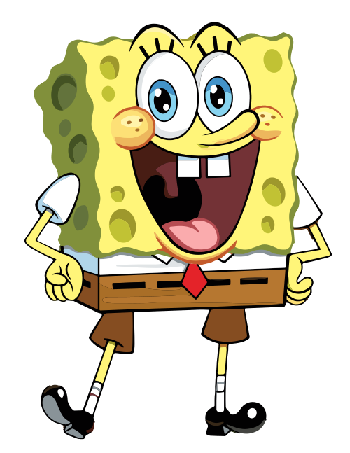
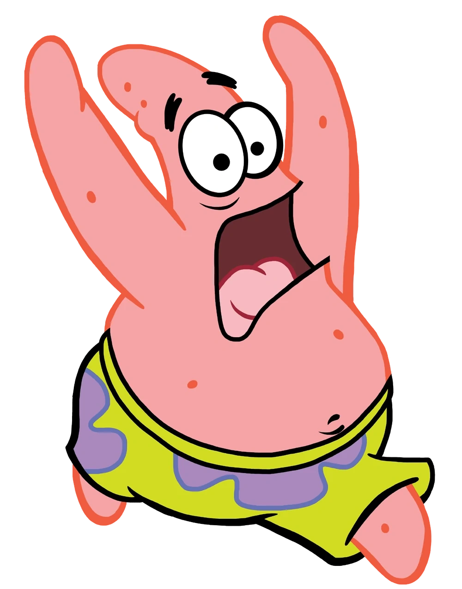

O FUNDO DO MAR VIROU UMA ARENA
Uma batalha. Dois times. Muitos likes.
Escolha seu lado e ajude seu time a capturar mais águas-vivas!
ARENA DE BATALHA PRONTA PARA COMEÇARPARTIDA 01

TIME A
Bob Esponja
0TEMPO RESTANTE02:00⚡ BATALHA DE CAPTURA
0TIME B
Patrick

⚡ Força do time A 50%50% Força do time B ⚡
TikFinity desconectado✦ Redes prontas! Toque no personagem para mandar um like
ÁGUA-VIVA DOURADA · 2 PONTOSPrimeiro time a 30 likes captura!0 / 30 VS 0 / 30
Estou pronto!
TIME A ♥ 0 likes
Essa é minha!
TIME B ♥ 0 likes
Ao vivo: primeira escolha A ou B inicia a partida
♛ Quem faz a batalha acontecer